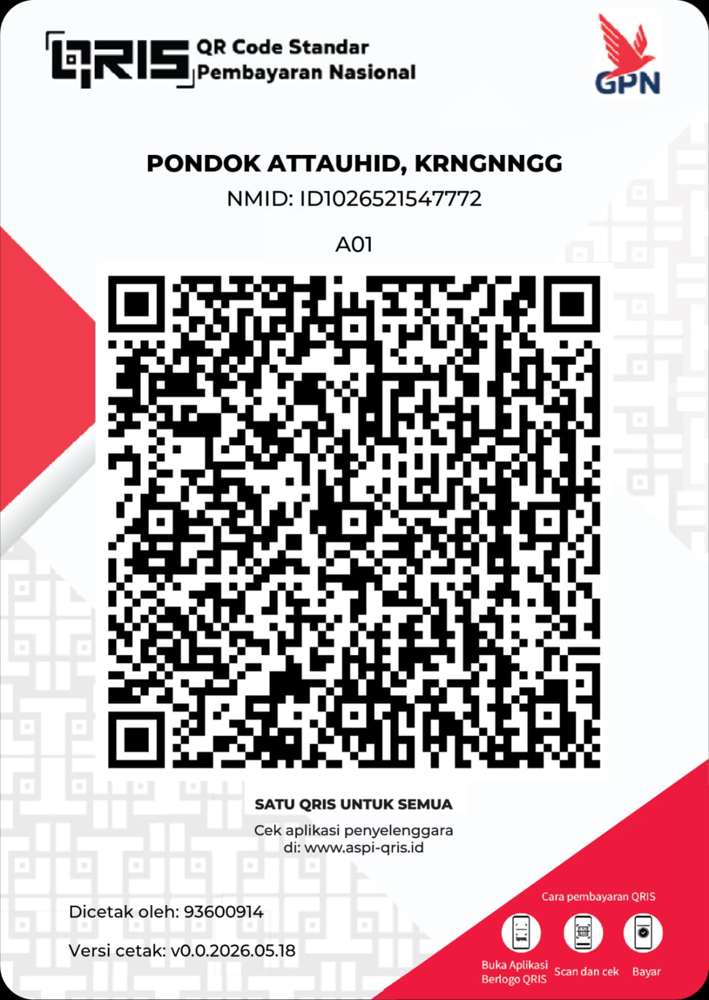

Salurkan
Wakaf Terbaik Anda
Bank Mandiri
177-00-2684005-5
a.n. Yayasan Binaul Ummah At-Tauhid
*Klik salin untuk menyimpan nomor rekening otomatis.
Konfirmasi via WhatsAppScan QRIS

Bank Mandiri
177-00-2684005-5
a.n. Yayasan Binaul Ummah At-Tauhid
*Klik salin untuk menyimpan nomor rekening otomatis.
Konfirmasi via WhatsApp